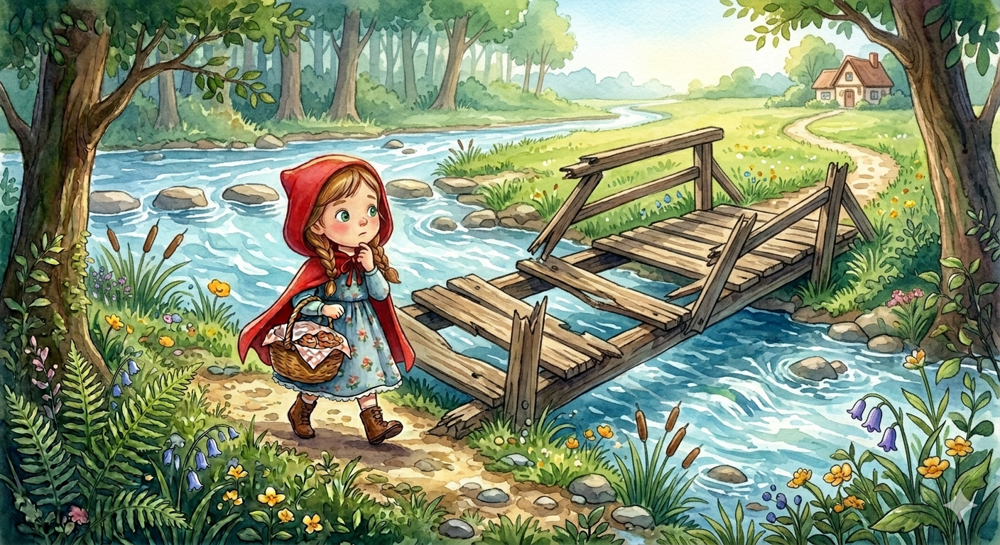

3
Le raccourci par la rivière
Tu trouves que la forêt est trop sombre et tu choisis le chemin le plus long, en longeant la rive de la rivière cristalline. Le soleil brille et la brise est fraîche, mais tu tombes bientôt sur un gros obstacle : le vieux pont en bois qui mène de l'autre côté a plusieurs planches cassées et semble très fragile. L'eau coule fort en contrebas et tu dois te rendre chez grand-mère. Que fais-tu pour traverser ?
A) Tu décides de tester ton équilibre et de traverser le pont cassé avec beaucoup de prudence. (Rendez-vous à 6)
B) Tu cherches un endroit moins profond pour essayer de traverser la rivière en sautant de pierre en pierre. (Rendez-vous à 7)